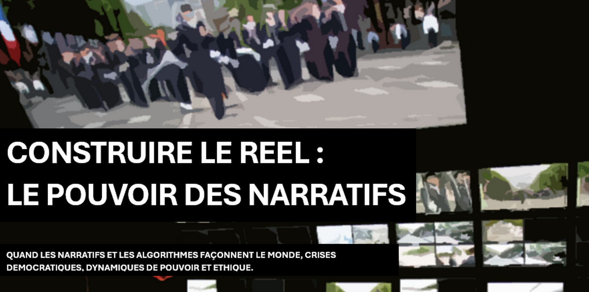

AU-DELÀ DE L'ÉCHIQUIER :
LA PUISSANCE EST INFRASTRUCTURELLE
« L'espace n'est pas un échiquier où l'on déplace des pions, c'est la structure même de la table sur laquelle nous jouons. Renverser la table ne permet pas de gagner la partie, car cela abolit le jeu lui-même, définitivement. »
Red Teaming
On ne peut pas se préparer à tout, mais on peut se préparer au pire, voire à l'improbable.
Le Red Teaming n'est pas une réaction passive aux crises : c'est une posture proactive d'analyse et de déconstruction continue. Mon approche éprouve la vulnérabilité des doctrines, des organisations humaines, des négociations et des infrastructures critiques. En mobilisant le Design Fiction et la prospective de rupture, il s'agit d'identifier les angles morts décisionnels et de concevoir des plans alternatifs avant que l'environnement ne force l'improvisation.
DÉCONSTRUCTION MÉTHODOLOGIQUE
Remise en question des certitudes managériales, détection des vulnérabilités informationnelles et des failles géoéconomiques.
DESIGN FICTION & SCÉNARIOS LIMITES
Simulation d'environnements sociétaux et stratégiques dégradés pour préparer la résilience décisionnelle sous haute contrainte.
Projets de Recherche & Travaux

Géopolitique de l'Espace
Analyse complète des dynamiques de pouvoir extra-atmosphériques, militarisation de l'orbite basse et reconfiguration des souverainetés face au New Space.

Guerre de l'Information
Désinformation structurée et manipulation des masses : étude des nouveaux vecteurs de déstabilisation étatique et du concept de post-vérité dans l'espace numérique.

Golden Dome : Un Nouvel IDS ?
En quoi le programme constitue une réinterprétation moderne de l'Initiative de Défense Stratégique et quelles asymétries en découlent face aux vecteurs hypersoniques.
Signaux Faibles (Horizon 2035-2050)
Voici quelques-uns des scénarios et signaux de rupture possibles : des événements et mutations stratégiques critiques susceptibles de survenir à moyen et long terme, auxquels les organisations n'ont encore jamais pensé.
La Faille du Biais Analytique
Guerre Cognitive
HORIZON 2035
Internet M2M & Épuisement Open Source
Infrastructure Numérique
HORIZON 2039
Mid-Tech de Survie & Balkanisation
Souveraineté & Tech
HORIZON 2045
Syndrome de Kessler & Rupture Logistique
Hyper-Infrastructures
HORIZON 2045
Armes Non-Conventionnelles (ADMN)
Macro-Stratégie
HORIZON 2045
Expropriation & Fin de l'OMPI
Géoéconomie & Lawfare
HORIZON 2050
La Force d'une Approche Hybride
L'hyper-spécialisation crée des angles morts. Aujourd'hui, comprendre les basculements mondiaux exige de croiser les disciplines. Maîtriser la Géopolitique permet d'identifier les rapports de force. La Philosophie politique donne la grille de lecture pour décoder les idéologies sous-jacentes. Enfin, le PGE (Programme Grande École) en Management apporte l'ingénierie concrète : comment orchestrer la Conduite du Changement au sein des structures complexes pour s'adapter à ces chocs.
Mon parcours n'est pas une dispersion, c'est une méthode d'analyse intégrale : comprendre le monde, décrypter les récits, et posséder les outils opérationnels (gestion organisationnelle, design fiction, prospective, communication...) pour agir sur le réel.